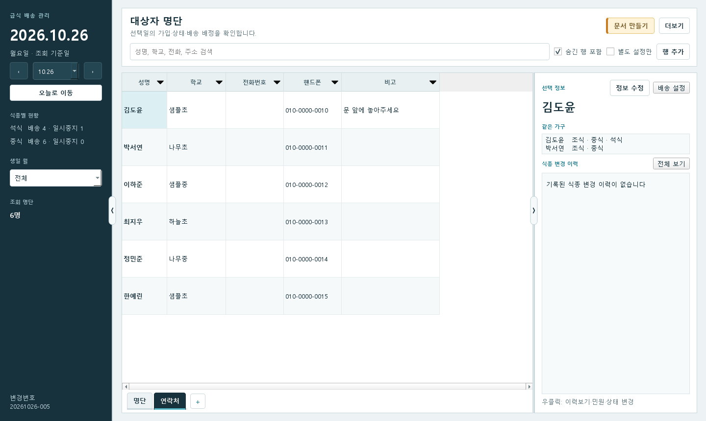
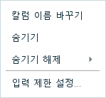
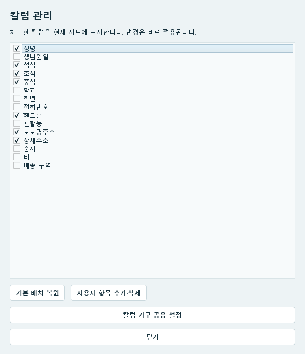
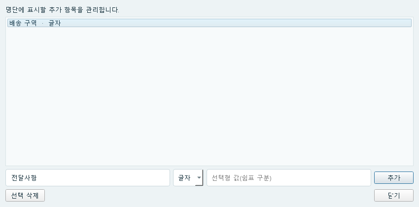

03 / 사용 방법
시트·칼럼 활용
칼럼은 성명·핸드폰·주소처럼 표의 세로 항목입니다. 시트마다 필요한 칼럼만 보이게 정리할 수 있습니다.
용도별 시트 만들기
시트는 같은 명단을 다른 칼럼 배치로 보는 화면입니다. 예를 들어 연락처 확인용 시트에는 성명·핸드폰·학교·비고를 두고, 배송용 시트에는 식종·주소·배송순서를 둘 수 있습니다.


- 명단 아래 시트 이름 옆의 +를 누릅니다.
- 시트 이름을 입력하고 확인합니다. 예: 연락처, 배송용.
- 새 시트에서 필요 없는 칼럼을 숨기고 순서·너비를 조정합니다.
- 다른 시트 이름을 눌러 전환합니다.
시트 이름을 우클릭하면 이름 바꾸기와 시트 삭제가 나옵니다. 시트를 삭제해도 대상자 정보는 남고, 마지막 시트 하나는 삭제할 수 없습니다.
칼럼 숨기기·다시 보이기


- 숨길 칼럼의 맨 위 제목에서 우클릭합니다.
- 숨기기를 누릅니다. 현재 시트에서 그 칼럼이 보이지 않게 됩니다.
- 다시 보려면 다른 칼럼 제목을 우클릭해 숨기기 해제에서 해당 이름을 고릅니다.
여는 위치 · 여러 칼럼을 한꺼번에 고르기 → 더보기 → 운영·설정 → 칼럼 관리


칼럼 관리의 체크를 켜거나 끄면 현재 시트에 바로 적용됩니다. 전부 숨겨 표가 비어 보여도 이 창에서 다시 체크할 수 있습니다. 기본 구성으로 돌아가려면 기본 배치 복원을 누릅니다.
칼럼 순서·너비·이름 바꾸기
| 할 일 | 조작 |
|---|---|
| 순서 바꾸기 | 칼럼 제목을 누른 채 원하는 위치로 끌어 옮깁니다. |
| 너비 조절 | 칼럼 제목 사이의 경계선을 좌우로 끌어 글자가 보일 만큼 넓힙니다. |
| 표준 칼럼 이름 바꾸기 | 칼럼 제목 우클릭 → 칼럼 이름 바꾸기에서 표시할 이름을 입력합니다. |
| 왼쪽·오른쪽 영역 접기 | 명단 양옆 경계의 화살표 손잡이를 누릅니다. 다시 누르면 펼쳐집니다. |
시트별 칼럼 순서·너비·숨김 상태는 이 PC의 해당 운영 파일에 대해 기억합니다. 칼럼 표시 이름은 시트들에 함께 적용됩니다.
새 칼럼 만들기
여는 위치 · 더보기 → 운영·설정 → 칼럼 관리 → 사용자 항목 추가·삭제


- 새 항목 이름에 칼럼 이름을 입력합니다. 예: 전달사항.
- 내용에 맞는 형식을 선택합니다. 메모는 문자, 수량은 숫자, 날짜는 날짜 형식을 고릅니다.
- 선택형이면 사용할 값들을 쉼표로 나눠 입력합니다. 예: 문 앞, 직접 전달, 전화 후 전달.
- 추가를 누릅니다. 명단에서 새 칼럼의 셀을 더블클릭해 값을 입력합니다.
직접 입력하는 칼럼의 제목을 우클릭한 뒤 입력 제한 설정에서 전화번호·날짜 형식이나 최대 글자 수를 정할 수 있습니다. 선택형 항목의 선택지는 사용자 항목을 만들 때 정합니다.
검색·필터·정렬 사용
- 이름·학교·전화·주소로 찾을 때는 명단 위의 검색칸에 입력합니다.
- 특정 칼럼의 값만 보려면 칼럼 제목 옆 ▼를 누르고 필요한 값을 체크한 뒤 적용합니다. 예: 관할동에서 정자동만 선택.
- 순서를 바꾸어 보려면 칼럼 제목을 누릅니다. 한 번은 오름차순, 두 번은 내림차순, 세 번은 그 칼럼의 정렬 해제입니다.
- 검색 결과가 너무 적으면 검색어를 지우고 칼럼 필터 해제를 누릅니다. 중지한 사람은 숨긴 행 포함도 체크해 봅니다.
두 칼럼 이상으로 정렬하면 먼저 누른 칼럼이 우선입니다. 예를 들어 학교를 먼저, 성명을 다음에 누르면 학교별로 모은 뒤 이름순으로 볼 수 있습니다.
다른 담당자의 화면 배치 가져오기
여는 위치 · 더보기 → 운영·설정 → 설정 → 다른 사용자 화면 설정 가져오기
- 같은 운영 파일을 사용하는 사용자 목록에서 가져올 사람을 선택합니다.
- PC 이름·저장 시각·시트 목록·숨긴 칼럼 수를 확인하고 가져옵니다.
- 시트 이름·순서와 칼럼 배치가 바뀌었는지 확인합니다.
명단 데이터는 바뀌지 않습니다. 사용자 목록에 없으면 그 담당자가 이 기능을 지원하는 버전으로 같은 운영 파일을 연 적이 있는지 확인하세요.